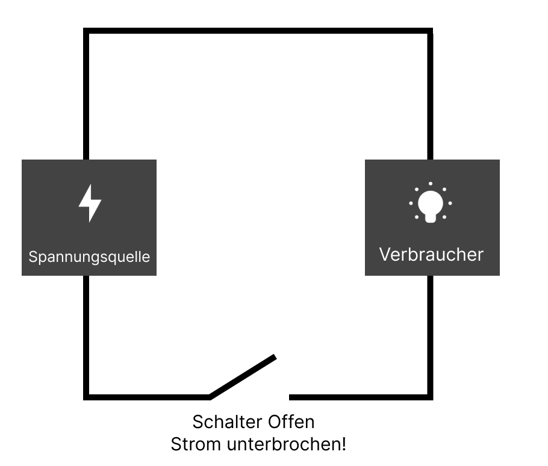

Was ist Elektrotechnik?
Elektrotechnik ist ein Zweig der Ingenieurwissenschaften, der sich mit der Untersuchung und Anwendung von elektrischen Systemen befasst. Es umfasst die Entwicklung, den Entwurf und die Anwendung von elektrischen Geräten und Systemen.
Grundlegende Konzepte
1. Ohmsches Gesetz
Das Ohmsche Gesetz beschreibt die Beziehung zwischen Spannung (U), Strom (I) und Widerstand (R). Es lautet: U = I × R. Dies bedeutet, dass die Spannung gleich dem Produkt aus Stromstärke und Widerstand ist.
2. Kirchhoffschen Gesetze
Kirchhoffs Gesetze sind zwei wichtige Regeln in der Elektrotechnik:
- Kirchhoffs Spannungsgesetz: Die Summe der Spannungen in einem geschlossenen Stromkreis ist gleich null.
- Kirchhoffs Stromgesetz: Die Summe der Ströme, die in einen Knotenpunkt eines Stromkreises einfließen, ist gleich der Summe der Ströme, die aus diesem Knotenpunkt herausfließen.
3. Elektrische Leistung
Die elektrische Leistung (P) ist das Produkt aus Spannung (U) und Strom (I): P = U × I. Die Einheit der Leistung ist Watt (W).
Anwendungen der Elektrotechnik
Elektrotechnik findet Anwendung in vielen Bereichen, darunter:
- Elektrische Energieerzeugung und -verteilung
- Elektronische Geräte und Systeme
- Telekommunikation
- Automatisierungstechnik
- Verkehrstechnik und -systeme
- Medizintechnik
Stromkreis
1. Grundlagen eines Stromkreises
- Spannungsquelle: Eine Spannungsquelle, wie eine Batterie oder ein Generator, liefert die elektrische Energie, die den Stromkreis antreibt. Die Spannung, die von der Quelle bereitgestellt wird, verursacht den Fluss von Elektronen durch den Stromkreis.
- Leiter: Leiter sind Materialien, die den elektrischen Strom leicht leiten, wie Kupfer- oder Aluminiumdrähte. Sie verbinden die verschiedenen Komponenten des Stromkreises miteinander.
- Verbraucher: Ein Verbraucher ist ein elektrisches Gerät oder ein Komponent, die Energie aus dem Stromkreis verbraucht, wie Glühbirnen, Motoren oder Widerstände. Sie erzeugt Arbeit durch den Fluss von Strom, indem sie elektrische Energie in andere Formen von Energie umwandelt, wie Licht oder mechanische Bewegung.
- Schalter: Ein Schalter wird verwendet, um den Stromkreis zu öffnen oder zu schließen. Wenn der Schalter geöffnet ist, wird der Stromkreis unterbrochen und der Stromfluss stoppt. Wenn der Schalter geschlossen ist, wird der Stromkreis vollständig, und der Strom kann fließen.
Schaltungen
Schaltungen sind das Herzstück der Elektrotechnik und bestehen aus verschiedenen Komponenten, die miteinander verbunden sind, um elektrische Aufgaben zu erfüllen. Es gibt verschiedene Arten von Schaltungen:
- Serienschaltung: In einer Serienschaltung sind die Komponenten hintereinander geschaltet. Der gleiche Strom fließt durch alle Komponenten, aber die Spannung teilt sich auf.
- Parallelschaltung: In einer Parallelschaltung sind die Komponenten nebeneinander geschaltet. Jede Komponente erhält die gleiche Spannung, aber der Strom teilt sich auf.
- Kombination von Serien- und Parallelschaltungen: Oft werden Serien- und Parallelschaltungen kombiniert, um komplexe Netzwerke von elektrischen Komponenten zu erstellen.
- Wechselstrom (AC) und Gleichstrom (DC): Unterschiedliche Arten von elektrischem Strom, wobei AC sich periodisch ändert und DC konstant ist.
- Schaltpläne: Diagramme, die die Anordnung der Komponenten in einer Schaltung darstellen, einschließlich der Verbindungen und Wechselwirkungen zwischen ihnen.
Elektromagnetismus
Elektromagnetismus befasst sich mit den Wechselwirkungen zwischen elektrischen und magnetischen Feldern. Wichtige Konzepte sind:
- Elektromagnetische Induktion: Der Prozess, bei dem ein sich änderndes Magnetfeld eine elektrische Spannung in einem Leiter erzeugt. Dies ist die Grundlage für viele Geräte wie Generatoren und Transformatoren.
- Magnetische Felder: Bereiche um einen Magneten oder einen elektrischen Strom, in denen magnetische Kräfte wirken. Diese Felder sind verantwortlich für Phänomene wie die Anziehung und Abstoßung von Magneten.
- Wechselwirkungen zwischen elektrischen und magnetischen Feldern: Diese Wechselwirkungen sind Grundlage für elektromagnetische Wellen, die sich mit Lichtgeschwindigkeit fortbewegen.
Messtechnik
Die Messtechnik ist entscheidend, um elektrische Größen zu bestimmen und zu überwachen. Wichtige Messgeräte und Techniken sind:
- Multimeter: Ein Gerät zur Messung von Spannung, Strom und Widerstand in elektrischen Schaltungen.
- Oszilloskop: Ein Gerät zur Visualisierung von elektrischen Signalen über die Zeit, um deren Form und Eigenschaften zu analysieren.
- Stromzangen: Geräte, die den Strom messen, ohne den Stromkreis zu unterbrechen, indem sie den Leiter umschließen.
- Widerstandsmessgeräte: Spezialisierte Geräte zur genauen Bestimmung des elektrischen Widerstands eines Bauteils.
Steuerung und Regelung
Steuerung und Regelung sind Bereiche der Elektrotechnik, die sich mit der automatisierten Kontrolle und Anpassung von Systemen befassen:
- Regelkreise: Systeme, die automatisch eine bestimmte Größe auf einem gewünschten Wert halten, indem sie kontinuierlich messen und Anpassungen vornehmen.
- PID-Regler: Ein spezifischer Typ von Regler, der Proportional-, Integral- und Differentialanteile verwendet, um die Systemleistung zu optimieren.
- Automatisierung: Einsatz von Steuerungssystemen zur Automatisierung von Prozessen und Abläufen in der Industrie.
Energieerzeugung
Die Energieerzeugung ist ein wesentlicher Bereich der Elektrotechnik, der sich mit der Erzeugung und Umwandlung von Energie beschäftigt:
- Kraftwerke: Anlagen zur Erzeugung von elektrischer Energie durch verschiedene Verfahren wie Verbrennung fossiler Brennstoffe, Kernenergie oder erneuerbare Energien.
- Erneuerbare Energien: Quellen wie Solarenergie, Windenergie und Wasserkraft, die zur nachhaltigen Energieversorgung beitragen.
- Stromnetz: Die Infrastruktur zur Verteilung und Übertragung von elektrischer Energie vom Erzeuger zum Verbraucher.
Kommunikation
Kommunikationstechnik befasst sich mit der Übertragung und Verarbeitung von Informationen:
- Signalverarbeitung: Techniken zur Analyse und Manipulation von Signalen, um nützliche Informationen zu extrahieren oder zu verbessern.
- Netzwerke: Systeme zur Verbindung von Computern und Geräten, die die Kommunikation und Datenübertragung ermöglichen.
- Drahtlose Kommunikation: Technologien wie WLAN, Bluetooth und Mobilfunk, die kabellose Datenübertragung ermöglichen.
Robotik
Robotik ist der Bereich der Elektrotechnik, der sich mit der Konstruktion und dem Einsatz von Robotern beschäftigt:
- Robotersysteme: Geräte, die automatisierte Aufgaben ausführen und oft in der Industrie, Forschung und Unterhaltung eingesetzt werden.
- Sensoren und Aktuatoren: Komponenten, die Roboter in die Lage versetzen, ihre Umgebung wahrzunehmen und darauf zu reagieren.
- Steuerungssysteme: Systeme, die die Bewegungen und Handlungen von Robotern steuern und koordinieren.
Zusätze
Robotik ist der Bereich der Elektrotechnik, der sich mit der Konstruktion und dem Einsatz von Robotern beschäftigt:
| Vorsatz | Symbol | Exponent | Faktor |
|---|---|---|---|
| Pico | p | 10⁻¹² | 0,000000000001 |
| Nano | n | 10⁻⁹ | 0,000000001 |
| Micro | µ | 10⁻⁶ | 0,000001 |
| Milli | m | 10⁻³ | 0,001 |
| Centi | c | 10⁻² | 0,01 |
| base unit | 10⁻⁰ | 1 | |
| Deka | da | 10¹ | 10 |
| Hekto | h | 10² | 100 |
| Kilo | k | 10³ | 1.000 |
| Mega | M | 10⁶ | 1.000.000 |
| Giga | G | 10⁹ | 1.000.000.000 |
| Terra | T | 10¹² | 1.000.000.000.000 |